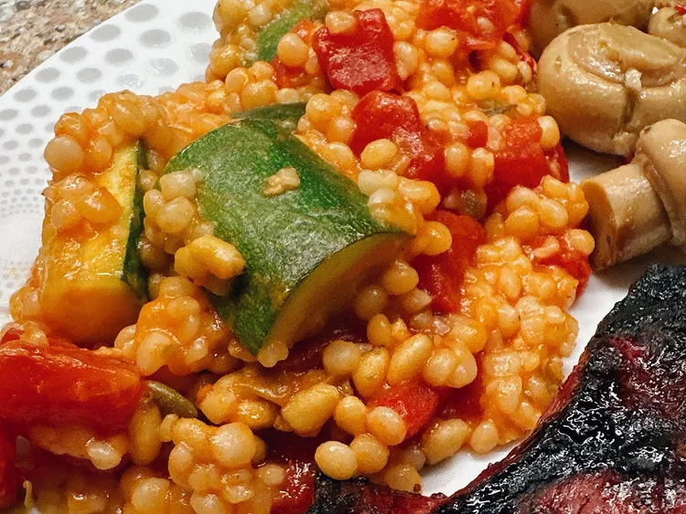

CousCous

How to make CousCous
Couscous is a versatile and easy-to-prepare dish that originates from North Africa.
It is made from tiny granules of semolina wheat, which are steamed until tender and fluffy. To prepare couscous, start by boiling water or broth with a pinch of salt and a drizzle of olive oil.
Ingredients
- water
- chicken broth
- sun-dried tomatoes
- Kalamata olives
- Pour water and chicken broth into a saucepan
- stir in the garlic and bring to a boil
- Stir in pearl couscous, cover the pan, and remove from heat
- Allow couscous to stand until water has been absorbed, about 5 minutes; fluff with a fork.